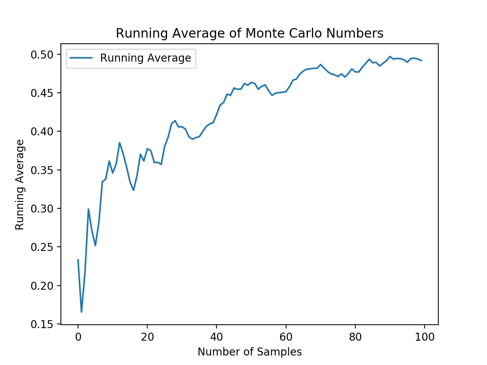

Abstract: Online algorithms and data streams are concepts in computer science and data processing that deal with situations where data arrives continuously, and the algorithm needs to process it on-the-fly without having access to the entire dataset at once. This is in contrast to offline algorithms, which assume that the entire input is available from the beginning.
Online algorithms are designed to make decisions or provide solutions without having complete information
about the input data in advance. These algorithms are used in scenarios where the data arrives sequentially,
and decisions must be made immediately without knowledge of future data. Online algorithms are often evaluated
based on their competitive ratio, which measures how well the algorithm performs compared to an optimal
offline algorithm that has complete knowledge of the input.
Examples of online algorithms include:
Data streams refer to a continuous flow of data that is generated and consumed in real-time. Unlike
traditional batch processing, where data is collected and processed in fixed-size chunks, data stream
processing deals with data that is generated and processed on the fly, often in a single pass. Examples of
data streams include social media feeds, network traffic, and sensor data.
Challenges and considerations in data stream processing include:
Online algorithms are particularly relevant in the context of data streams. Some examples include:
Let's consider a simple example of an online algorithm for computing the average of a stream of numbers.
This algorithm maintains the running average as new numbers arrive. The code
demonstrates a basic Python implementation.

We simulated a stream of Monte Carlo numbers and computed the running average using an online algorithm. To
generate Monte Carlo numbers (floats between 0 and 1) has been used the 'random' module, while
'OnlineAverage' class to compute the running average. 'The monte_carlo_stream'
is created using a list comprehension that generates 10 such random numbers.
Online algorithms for data streams are crucial in applications such as real-time analytics, monitoring, and anomaly detection, where timely processing of incoming data is essential.